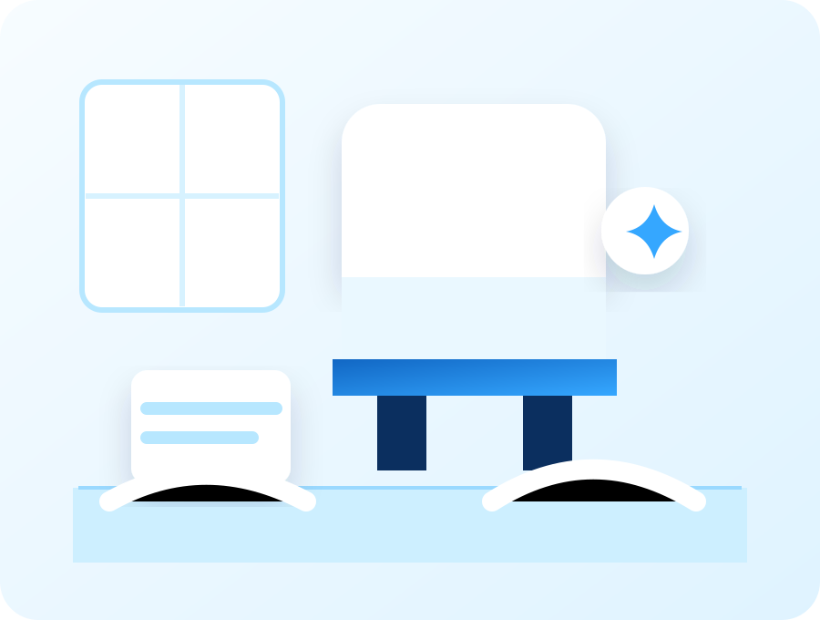

Standard Cleaning
Standard cleaning is designed for routine maintenance. It helps keep visible surfaces, floors, kitchens, bathrooms, bedrooms, and common areas feeling clean between deeper appointments. This service is a good fit for homes that are already in generally manageable condition and need dependable upkeep.
- Dusting accessible surfaces, ledges, and furniture.
- Cleaning kitchen counters, sinks, appliance exteriors, and tables.
- Cleaning bathroom fixtures, mirrors, vanities, toilets, tubs, and showers.
- Vacuuming carpets and rugs and mopping hard floors.